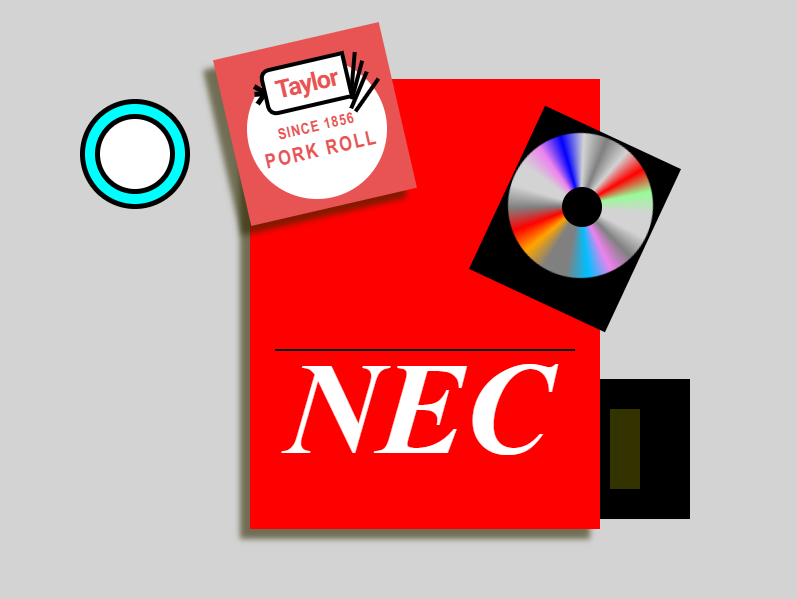

Section 1 Project 2
Our class worked together to build an assemblage sculpture using books, CDs, and boxes. Building on this collaborative project, I individually created a "CSS Still Life" with HTML and CSS. To enhance the realism and depth in my design, I incorporated perspective techniques such as skewing elements and adding shadows.
